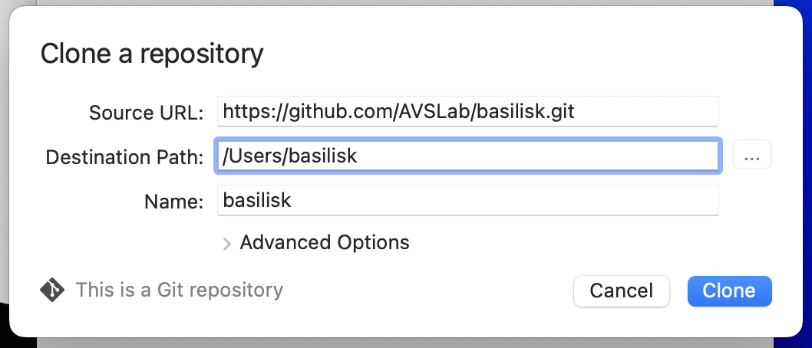

Download Source Code
Important
The Basilisk repo has moved from BitBucket to GitHub. If you already downloaded the source code, it is recommended that you download a fresh copy.
{kind=link}
The Basilisk software framework source code is openly hosted on github.org. Go to https://github.com/AVSLab/basilisk, log in with your GitHub account and download (see below). As this is the raw source code, you need to next install and compile the code before you can run it.
The Basilisk framework is developed using the Git version control system. The following directions explain how to clone or pull a copy from the repository.
If needed, create your own github.org account
Use a browser to go to the Basilisk GitHub Repository
In the “Quick setup” section select the
httpsoption instead of the ssh optionCopy the project url
https://github.com/AVSLab/basilisk.gitfrom the GitHub clone panel
Clone into preferred Git client (Source Tree for instance), or just clone the repository in the directory containing Basilisk. In SourceTree, use
clone from url, add the Basilisk repository url and selectdevelopbranch to pull the latest code.
{kind=link}